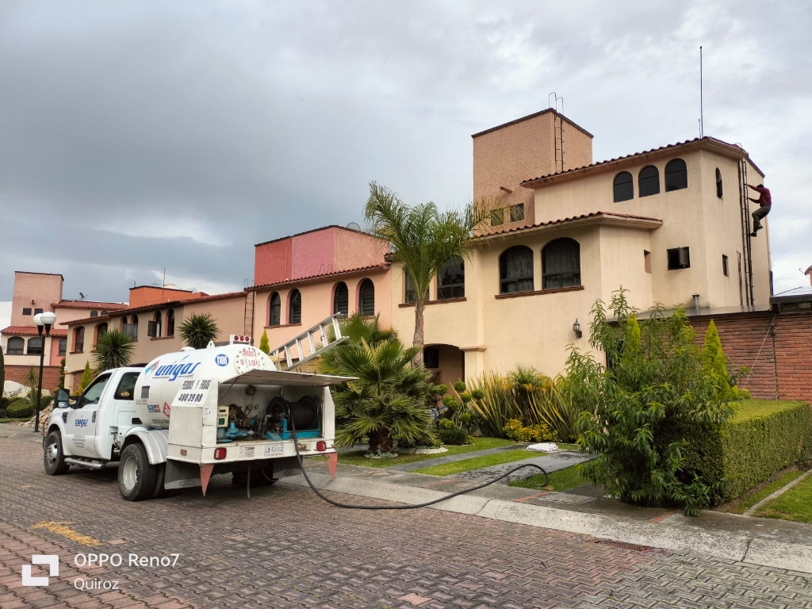
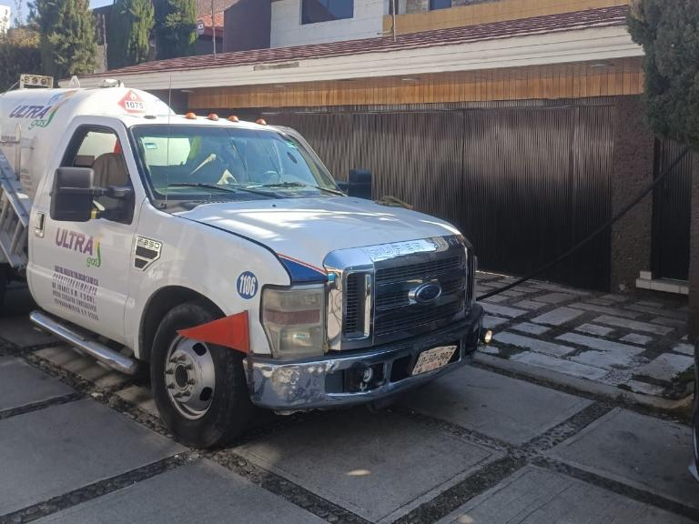
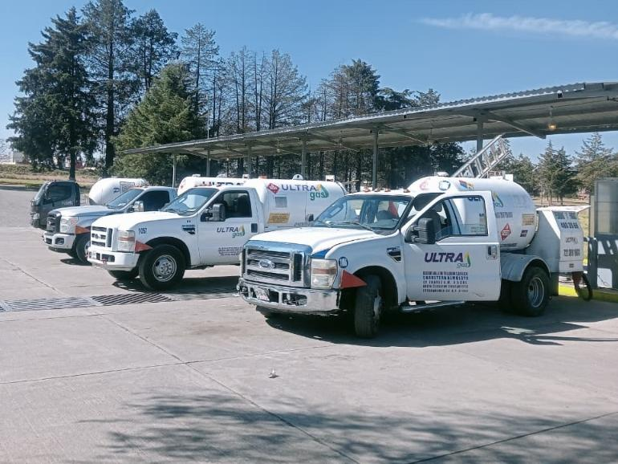
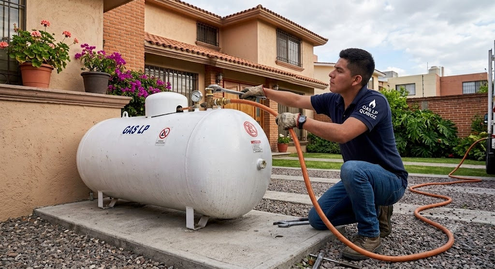

Respaldados por la solidez y logística de Grupo Quiroz. Despacho express de 20 a 35 minutos en todo Metepec con medidores digitales certificados por PROFECO y verificación técnica de fugas sin costo.
Somos una empresa especializada exclusivamente en el suministro de Gas LP para tanques estacionarios en Metepec, Estado de México.
Ofrecemos servicio express garantizado de 20 a 35 minutos, seguro y confiable para que nunca falte combustible de alto rendimiento en tu hogar o negocio.
Realizamos recarga de tanques estacionarios residenciales y comerciales con medidores digitales certificados por PROFECO, garantizando despacho exacto de litro por litro y cobertura total en Metepec.
Si necesitas gas para tu tanque estacionario cerca de ti en Metepec hoy mismo, contáctanos y recibe atención prioritaria inmediata.


Nuestro servicio de pipas de Gas LP en Metepec está diseñado para brindar entregas oportunas y seguras con monitoreo satelital en tiempo real.
Atendemos pedidos especializados de:
Contamos con la flotilla de pipas más moderna en Metepec para surtir tu tanque estacionario sin demoras ni contratiempos.
Selecciona tu fraccionamiento o colonia en Metepec para calcular el tiempo de arribo y solicitar tu pipa express al instante:


Ofrecemos servicio especializado de suministro y recarga de tanques estacionarios para clientes residenciales, comerciales e industriales en Metepec.
Nuestro protocolo de servicio garantiza:
Precios oficiales regulados con garantía estricta de litro por litro. Elige tu modo de cotización para generar tu despacho express en 1 clic:
Entregas garantizadas de 20 a 35 minutos en Metepec con seguimiento satelital de la pipa en tiempo real.
Unidades desplegadas estratégicamente en todos los cuadrantes y colonias del municipio de Metepec.
Revisión técnica gratuita de fugas en tu tanque estacionario e instalación en cada recarga de gas.
Atención adaptada para hogares, condominios, plazas comerciales, restaurantes y sector industrial.
Operamos bajo estrictos protocolos de seguridad industrial y certificaciones oficiales que garantizan un suministro confiable de Gas LP en todo Metepec.
Nuestro personal en Metepec está altamente capacitado bajo los más exigentes estándares de protección civil y prevención de riesgos.
Excelente servicio. Pedí carga para mi tanque estacionario y llegaron en 25 minutos. Pude pagar con tarjeta y la factura me llegó al instante.
Surtimos la cocina de nuestro restaurante cada semana. Muy puntuales, litros completos comprobados con medidor digital y excelente rendimiento.
El operador me ayudó a revisar si había fugas en las válvulas de forma 100% gratuita y me dio excelentes consejos técnicos de seguridad.
Muy profesionales y amables. Me mostraron el contador digital en ceros antes de iniciar y comprobaron el litro exacto al terminar la carga.
Excelente respuesta para suministro a condominios residenciales. Cuentan con unidades modernas, pago seguro con terminal y facturación inmediata.
Solicité servicio un domingo temprano y llegaron rapidísimo. Muy buen rendimiento del gas y trato respetuoso y honesto de los operadores.
Tu opinión nos ayuda a mantener los más altos estándares de calidad y rapidez.
Brindamos suministro mayorista continuo mediante pipas de gas LP de alta capacidad para:
Garantizamos abastecimiento ininterrumpido, facilidades de crédito comercial y un gestor de cuenta asignado para tu empresa.
Puedes solicitar tu servicio llamando o enviando mensaje de WhatsApp a cualquiera de nuestras 3 líneas directas de atención express: 722 389 1603, 722 380 0659 o 720 119 6866 para recibir suministro en 20 a 35 minutos en cualquier colonia de Metepec.
Sí, contamos con guardias permanentes y atención prioritaria para emergencias y desabasto de Gas LP en Metepec los 365 días del año. Comunícate a nuestras líneas directas o WhatsApp y coordinamos tu pipa al instante.
Sí. Nuestras pipas están equipadas con medidores digitales sellados y certificados por PROFECO. Puedes verificar en tiempo real el volumen surtido en tu contador.
Aceptamos pago en efectivo, tarjeta de crédito o débito a la entrega con terminal bancaria inalámbrica, y transferencia bancaria directa. Facturación electrónica inmediata en PDF/XML.
Sí, de manera 100% gratuita nuestros técnicos certificados inspeccionan la válvula, tanque estacionario y conexiones antes y después del llenado para garantizar cero fugas.
Sí, contamos con guardia permanente los 365 días del año. Los domingos prestamos servicio continuo en Metepec de 7:00 AM a 2:00 PM.